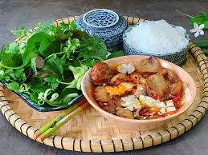
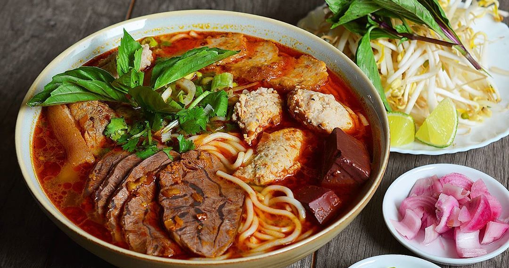
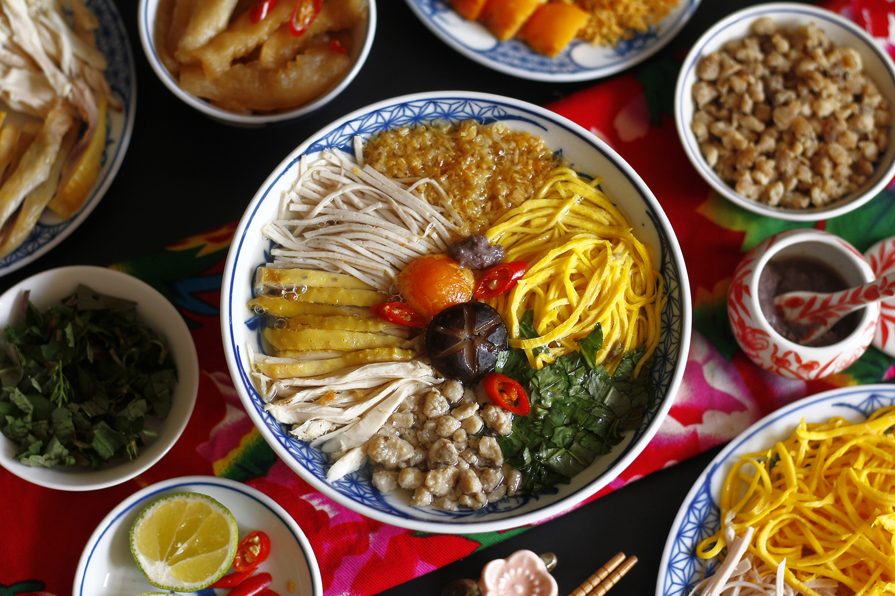
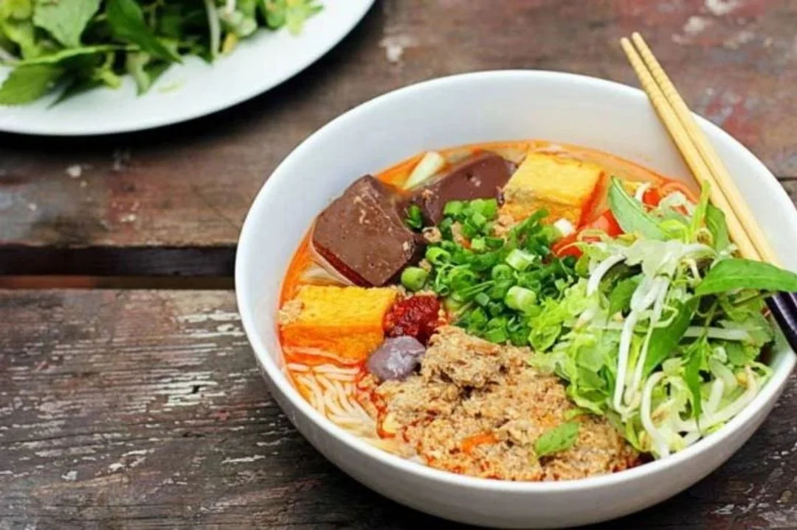
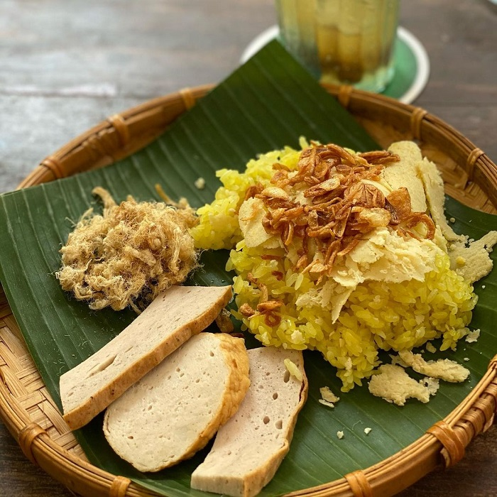
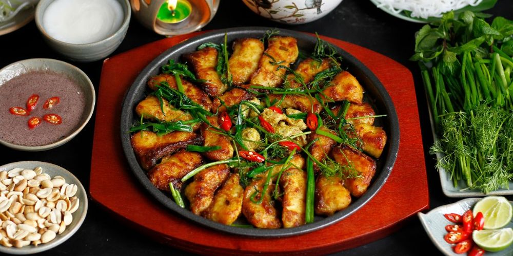

Phở
Phở là món nước truyền thống với nước dùng thơm ngon và bánh phở mềm.
Phở is a traditional noodle soup with flavorful broth and soft rice noodles.

Bún chả
Bún chả gồm thịt nướng và bún ăn kèm nước mắm chua ngọt.
Bun cha is grilled pork with vermicelli and sweet & sour fish sauce.

Bánh mì
Bánh mì là món ăn đường phố phổ biến với nhân phong phú.
Banh mi is a famous street sandwich with a variety of fillings.

Bún bò Huế
Món bún cay đặc trưng Huế với sả, giò heo và bò.
Hue-style spicy noodle soup with lemongrass, pork hock, and beef.

Bún thang
Món bún thanh nhã, kết hợp thịt gà xé, trứng, giò.
Bun thang is a delicate noodle soup with shredded chicken, egg, and pork roll.

Bún riêu cua
Nước dùng riêu cua, cà chua, đậu phụ, đôi khi có chả, ốc.
Bun rieu is a crab noodle soup with tomato, tofu, and sometimes pork rolls or snails.

Xôi xéo
Xôi nếp vàng ruộm, đậu xanh nghiền, mỡ hành, hành phi.
Xoi xeo is sticky rice topped with mashed mung beans, scallion oil, and crispy fried shallots.

Chả cá Lã Vọng
Cá chiên với nghệ và thì là, ăn với bún và rau thơm.
Cha ca La Vong is turmeric-marinated fish fried with dill, served with rice noodles and herbs.